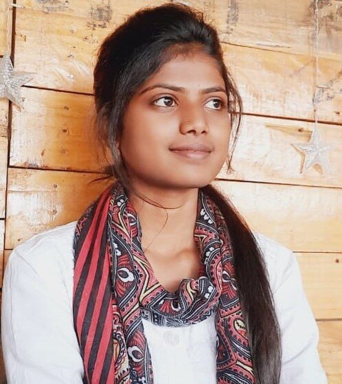

CONTACT
CLASSES

SADHANA GAVHADE
MCA STUDENT
MANIT(BHOPAL)
Myself Sadhana, Currently I am pursuing MCA from Maulana Azad National Institute Of Technology(Bhopal).I am 20 years old. I belongs to Dhar, Madhya Pradesh.I would like to build my Carrer in Machine Learning. My strengths are, I am a Quick learner and try to grab every opportunities from which I could learn something. As I belongs to the coding environment, here I am learning different languages to flourish myself .
I have completed my Higher Secondary's from Pithampur Public School, Dhar.
I have done Bachelors Of Computer Application from Devi Ahilya Vishwavidyalaya,Indore.
I have cleared NIMCET, through which I got admission in MANIT for Master's.
We are five members in my family. My father name is Madhukar Gavhade, He is an Employee in an Automobile sector. My mother name is Hemlata Gavhade, She is a Housewife. I have two sisters one is elder to me her name is Pratibha Gavhade and other is younger than me her name is Gayatri Gavhade.